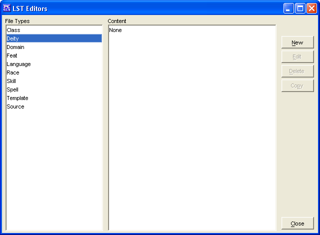

The Deity Editor is to create you own Deities, edit ones you have already made, and in the future will allow you to edit existing Deities (from other data/list files).
The New button will allow the creation of a new Deity.
The Edit button will allow you to edit the selected Deity (Deities created within this Deity Editor only at this stage).
The Delete button will remove the selected Deity (Deities created within this Deity Editor only at this stage).
The Copy button makes a copy of a selected Deity. In this way you can slightly modify an existing Deity and give it a new name.
The Close button will allow you to exit back to PCGen.
Deities added will be saved into the customDeities.lst file.